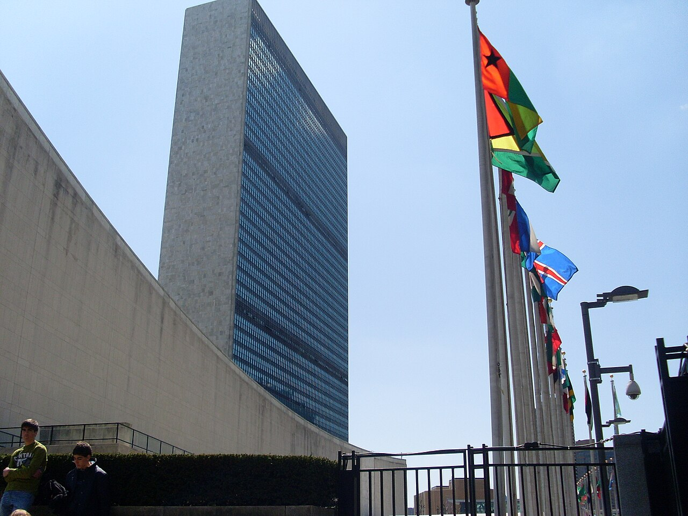

UN Careers Internships via Inspira and SUSI 2027 for Pakistani Students
Last updated: October 2026. Internship postings change constantly. Verify every opening on careers.un.org and every exchange call on pk.usembassy.gov.

Two short routes into international experience confuse Pakistani students more than any others: UN internships, which are real but unpaid and posted one by one, and American exchange programmes, where one famous name is dead and a live alternative has taken its place. This page separates the two, gives the rules that actually apply, and names the trap to avoid.
UN Secretariat internships through Inspira
The UN Secretariat — the UN's main administrative body — runs an internship programme for students and recent graduates. You apply through Inspira, the UN's recruitment system, on the UN Careers portal (careers.un.org), by filtering Category to "Internship". There is no fee at any stage, and anyone charging you to apply is running a scam.
- Who can apply: you must be enrolled in a graduate programme (master's or higher), enrolled in the final year of a bachelor's degree, or have graduated within one year before the internship starts. You need strong English or French, and you must not be the child or sibling of a UN Secretariat staff member.
- Duration: at least two months and at most six months.
- Pay: none, at the Secretariat. Interns cover their own travel, visa, accommodation, medical insurance and living costs. Some UN agencies, funds and programmes — UNICEF and WHO are commonly cited examples — pay stipends under their own rules, but that is per vacancy, not a general UN rule. Read the vacancy text, not a blog summary.
- How postings work: departments post openings all year, each with its own short window — recent postings typically stayed open about two weeks. There is no single deadline and no annual cycle to wait for. You apply separately for each opening, with a cover note and a Personal History Profile in Inspira, tailored to that posting's requirements. No professional work experience is required, but your field of study must closely match the role.
The honest assessment: a UN Secretariat internship is valuable experience and a strong CV line, but it costs money rather than paying it. Apply with a funding plan — family support, a university grant, or savings — and treat any vacancy that promises a Secretariat salary as a red flag.
SUSI 2027: the live American exchange for undergraduates
SUSI — the Study of the U.S. Institutes — is a fully funded short exchange run by the US Department of State's Bureau of Educational and Cultural Affairs. Institutes last five to six weeks in the summer at US universities, cover flights, accommodation, meals and activities, and are aimed at undergraduate student leaders, typically aged 18 to 25. Themes vary by institute and by country. For Pakistan, applications run through the US Embassy in Pakistan: applications for the 2027 cohort opened in autumn 2026, and deadlines vary by country, so the Pakistan call on pk.usembassy.gov is the only date that matters for you.
What selectors look for is leadership in your own community, not just grades: societies run, projects led, volunteer work sustained. Your application should show that record with specifics, the same way a scholarship SOP should — see our SOP guide.
A third route worth knowing: the UN Young Professionals Programme
If you already hold a bachelor's degree and want a staff job rather than an internship, the UN Young Professionals Programme (YPP) is the Secretariat's main entry route for young graduates, and professional work experience is not required to apply. It runs as an annual examination in selected job areas, with eligibility rules published on careers.un.org/ypp. It is far more competitive than an internship, but it is a real, salaried route — unlike internships, it is a job.
How to approach all three
Build one strong Inspira profile and keep it updated, since every UN application draws on it. Watch the UN Careers internship filter weekly rather than monthly, because windows are short. For SUSI, prepare your leadership record and statement before the embassy call opens, not after. And for every route on this page, remember the same rule as for scholarships: no one can sell you a place, and no fee is ever required to apply.